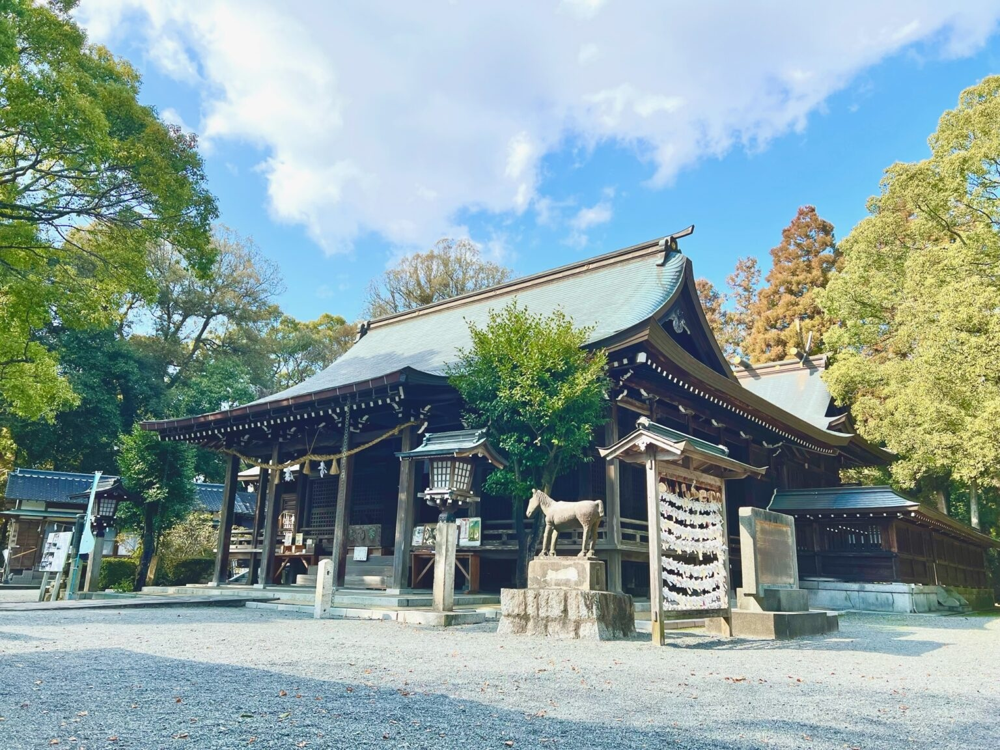

千栗八幡宮（Chiriku-hachiman-gū）

住所
〒849-0111
佐賀県三養基郡みやき町白壁2415
旧国名
肥前国一宮
御祭神
応神天皇・仲哀天皇（ちゅうあいてんのう）・神功皇后
千栗八幡宮について
古代より河川交通の要衝であり、神功皇后も三韓征伐の折に駐留したと伝えられる地に、郡司壬生春成（みぶのはるなり）が八幡大神の神託により創始されました。
聖武天皇の勅により社殿を造営しました。平安時代には、肥後の藤崎宮などとともに「五別所宮」に定められ勢力を伸ばし、
蒙古襲来に神威を発揮しました。戦国末期に鍋島直茂により復興され、後陽成天皇に勅額を賜っています。
千栗山全体の1万坪を超える広大な神域、石段の参道を登った先に社殿が立ち並んでいます。筑後平野の穀倉地帯にあり、五穀豊穣の崇敬を集めています。
お祭り
『御粥祭（おかゆさい）』・・毎年3月15日に行われる創始以来1200年の歴史をもつと伝えられる粥占いの神事です。2月26日に神殿に献上された米で粥を炊き、
そのカビの生え具合から、肥前、肥後、筑前、筑後、の四国の1年間の天候や地震、農作物の吉凶を占います。